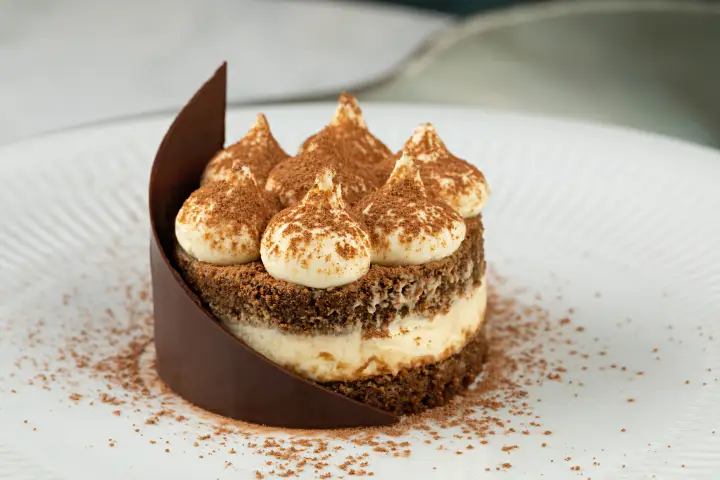

Tiramisu

Description
Tiramisu is a dessert, of Italian origin, that blends layers of espresso and liqueur-soaked sponge cake with a filling of mascarpone cheese and is then topped with cocoa powder.
Ingredients
FOR THE CREAM
- 4 large egg yolks
- ½ cup/100 grams granulated sugar, divided
- ¾ cup heavy cream
- 1 cup/227 grams mascarpone (8 ounces)
FOR THE ASSEMBLY
- 1 ¾ cups good espresso or very strong coffee
- 2 tablespoons rum or cognac
- 2 tablespoons unsweetened cocoa powder
- About 24 ladyfingers (from one 7-ounce/200-gram package)
- 1 to 2 ounces bittersweet chocolate, for shaving (optional)
Steps
- Prepare the cream: Using an electric mixer in a large bowl, whip together egg yolks and ¼ cup/50 grams sugar until very pale yellow and about tripled in volume. A slight ribbon should fall from the beaters (or whisk attachment) when lifted from the bowl. Set aside.
- In a medium bowl, whip cream and remaining ¼ cup/50 grams sugar until it creates soft peaks. Add mascarpone and continue to whip until it creates a soft, spreadable mixture with medium peaks. Gently fold the mascarpone mixture into the sweetened egg yolks until combined.
- For the assembly, combine espresso and rum in a shallow bowl and set aside.
- Using a sifter, dust the bottom of a 2-quart baking dish (an 8x8-inch dish, or a 9-inch round cake pan would also work here) with 1 tablespoon cocoa powder.
- Working one at a time, quickly dip each ladyfinger into the espresso mixture -- they are quite porous and will fall apart if left in the liquid too long -- and place them rounded side up at the bottom of the baking dish. Repeat, using half the ladyfingers, until you’ve got an even layer, breaking the ladyfingers in half as needed to fill in any obvious gaps (a little space in between is O.K.). Spread half the mascarpone mixture onto the ladyfingers in one even layer. Repeat with remaining espresso-dipped ladyfingers and mascarpone mixture.
- Dust top layer with remaining tablespoon of cocoa powder. Cover with plastic wrap and let chill in the refrigerator for at least 4 hours (if you can wait 24 hours, all the better). Top with shaved or finely grated chocolate, if desired, then slice or scoop to serve.